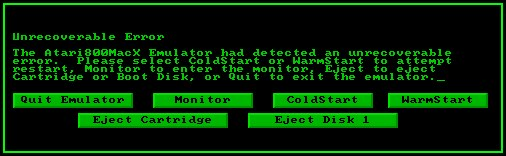

Welcome to Atari800MacX , the Atari 800/XL/XE/5200 emulator
for Macintosh OSX. This quick guide is intended to help those
who are new to Atari Emulation get started quickly. Experience
emulator users should also give this section a quick read to help you
get familiar with some of the special features of the Mac version, and new features of this release, 4.0.
Donationware
The emulator is released under the GPL license, however many
months/years of work have gone into it. If you use and appreciate
the emulator, please donate to it's development. I no longer take donations personally, but instead ask that you support the Internet Archive if you feel that you should donate. You can do this
by clicking on the menu item Donation... under the Atari800MacX menu, or by using this link.
OS ROMS
The emulator requires that you have ROM images for the Atari operating
system and the BASIC language ROM. These files are not
provided with the emulator for legal reasons, but they are widely
available on the internet. The default names for the ROMS
are atariosa.rom, atariosb.rom,
atarixl.rom,
ataribas.rom, and a5200.rom. By default, the emulator expects
the ROM files to be found in the OSRoms folder in the
Atari800MacX
folder. You can select files with different names or in different locations by using the Roms Tab of the Preferences window.
Starting the Emulator
Once the emulator is started, with the ROM files properly installed,
you should see a Blue Screen with white letters in the emulator with
the Atari BASIC ready prompt.
The first thing you will probably want to do is adjust the display to
your liking. There are many options for the Display
characteristics some of which can be accessed from the Display Menu, and others which are available from the Display Tab of the Preferences window. While we are on the topic, please take time to read through all of the documentation on the Preferences window.
You can open the Preferences window from the Preferences menu
item in the Atari800MacX menu, or by pressing the command and comma
keys. There are many, many options available in this emulator,
and almost everything you can think of can be customized.
OK, now you have the emulator up and running, you probably would like
to do something besides seeing the BASIC READY prompt, correct?
The emulator is capable of supporting Atari programs on
cartridge, disk, and cassette image files. To use these files,
you can open them by the menu items in the Media Menu, or through the controls in the Media Status
Window. You can also drag and drop the files onto the main
emulator window, although if it is a disk image, it will always be put
in drive 1. For a full list of the file types and extensions
supported by the emulator, please see File Types.
Finally, I suspect that you would like to simulate the controllers you
used to play those great Atari games. The emulator allows you to
use the keyboard, mouse, and USB gamepads/joysticks to do this.
To find out all of the details, please see the Controllers and Gamepads Tabs in the Preferences window.
What happens if the Emulated Atari crashes?
If the emulated Atari crashes, due to an illegal instruction, etc., the
emulator will display an Unrecoverable Error dialog. This
normally happens because of a corrupt disk or cartridge image, or one
that is used incorrectly. (It could happen if your OS ROM images
are bad also). Instead of locking up, the way a real Atari would,
the emulator gives you a choice or removing the media, performing a
warm or cold reset, entering the debug monitor, or simply quiting the
emulator. The Unrecoverable Error Dialog is show below, in both
the Windowed and Fullscreen versions.

What's New in 4.0?
Features Added/Changed:
Added support of VAPI copy-protected disk images. This
does not yet enable all images, but perhaps 90%. If the VAPI dll
source is ever released, this number may be increased. The current
images from www.atarimania.com which are known not to work are:
Alternate Reality: The City
Ankh
Attack at EP CYG 4
Ballblazer Activision (UK)
Jenny of the Prairie
Mercenary - Escape from Targ _ Novagen Software
Mr. Do!
Music Studio (The)
Promoteur
Rescue on Fractalus! _ Activision (UK)
Spy vs Spy
Targets - A Number Game
Added new D: patch, which provides an alternative to the H: hard drive
emualtion. This sets up D5:-D8: to access hard drive directories one
and two, with or without line feed translation. This allows the
Macintosh hard drive direcories to be accessed by programs which do not
recognize the H: device fully, such as MyDos and Action!.
Added
multiple preference configurations, allowing you to set up multiple
machine configurations, and load them by opening a .a8c file.
Added
ability to paste text from the Macintosh to the Atari. The pasted
text is input as keystrokes to the emulator, and should be usable
in most programs.
Added
ability to copy text from the Atari to the Macintosh. The copied
text can be selected using Select All, or by using the Mouse to define
a selection rectangle on the screen. It works in normal video or
XEP80 modes, but is not available in full screen mode, or if the Mouse
is being used for Mouse Controller emulation.
Added emulation
of Atari 1200XL Function keys. You can press the Atari F1 by
pressing Option-F1 in the emulator, along with optionally shift and or
control. F2-F4 work the same way.
Added alternatives for
the Atari keys mapped to the Macintosh
Insert/Delete/Home/End/PageUp/PageDown keys as those keys are not
present on some new Macintosh keyboards.
Added ability to use multiple analog joysticks on the same gamepad as multiple Atari joysticks.
Added the following features from version 2.1 of Atari800 Core Emulator
Added Axlon and Mosaic RAM expansions for Atari 400/800
Added emulation of MIO and Black Box
Added support of .PRO copy-protected disk images
Implemented tape loading with variable bitrates
Implemented cassette writing via hardware registers
Added emulation of CX85 numeric keyboard
R: device can be serial-only or network-only (selectable)
Bugs Fixed
Fixed caps lock with International Key Mapping on.
Fixed a bug with turning joystick emulation on and off which was causing a stuck joystick.
Fixed a bug where one analog joystick was not selectable on Gamepad 2.
The following fixes were added from version 2.10 of Atari800:
Fix for "Ilusia" demo
Better GTIA bug mode emulation
Fixed POKEY registers: ALLPOT, IRQEN and STIMER
Various Atari5200 fixes
Fixed Atrax cartridge bank switching
Major source code cleanup, compiles with -pedantic etc.